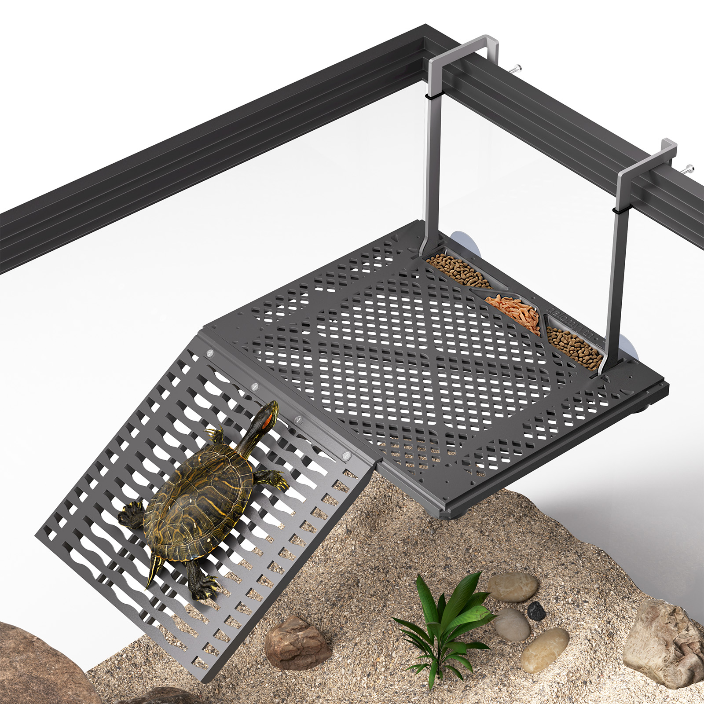
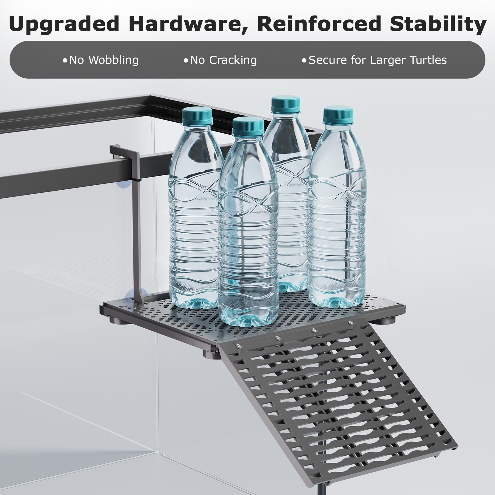
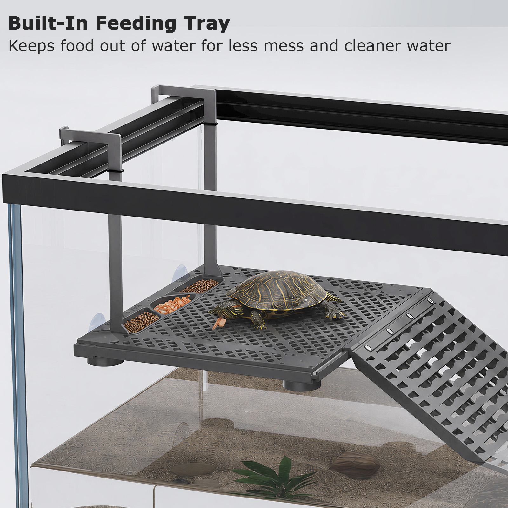
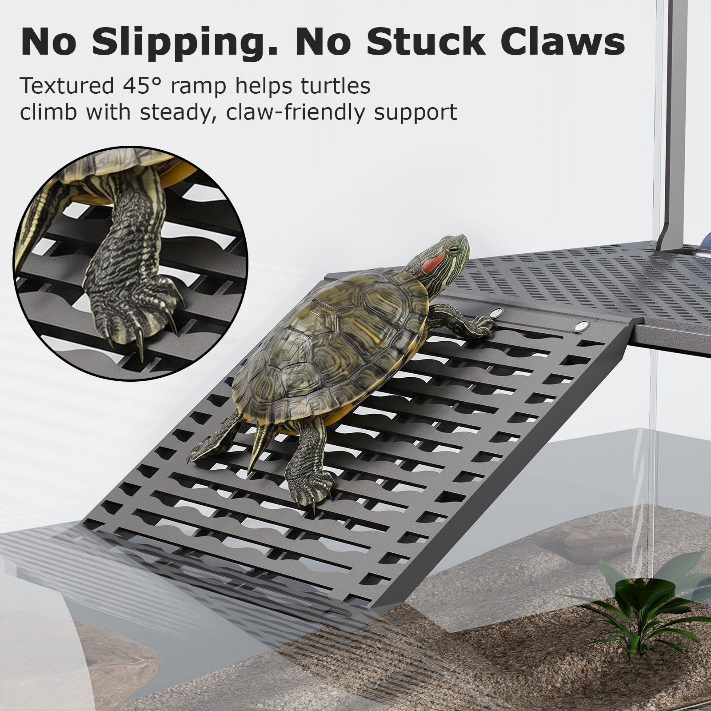
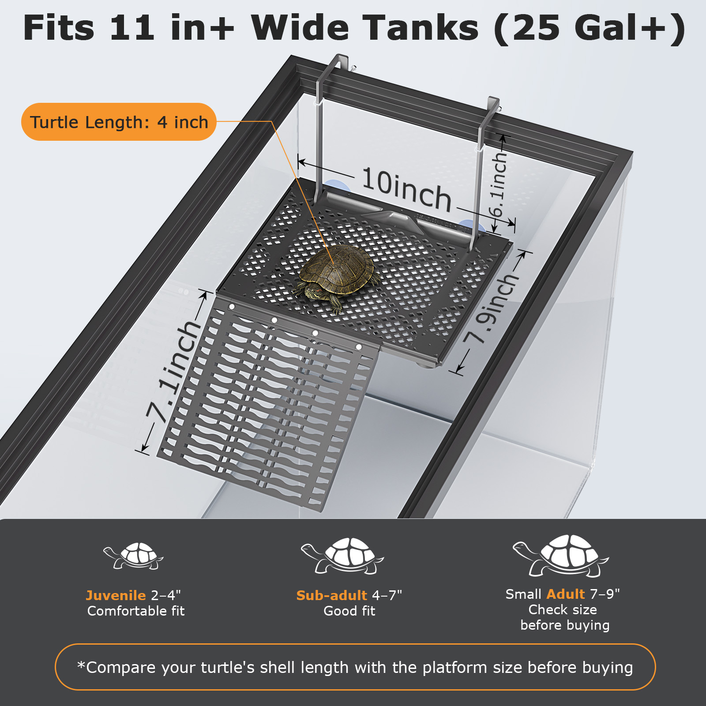
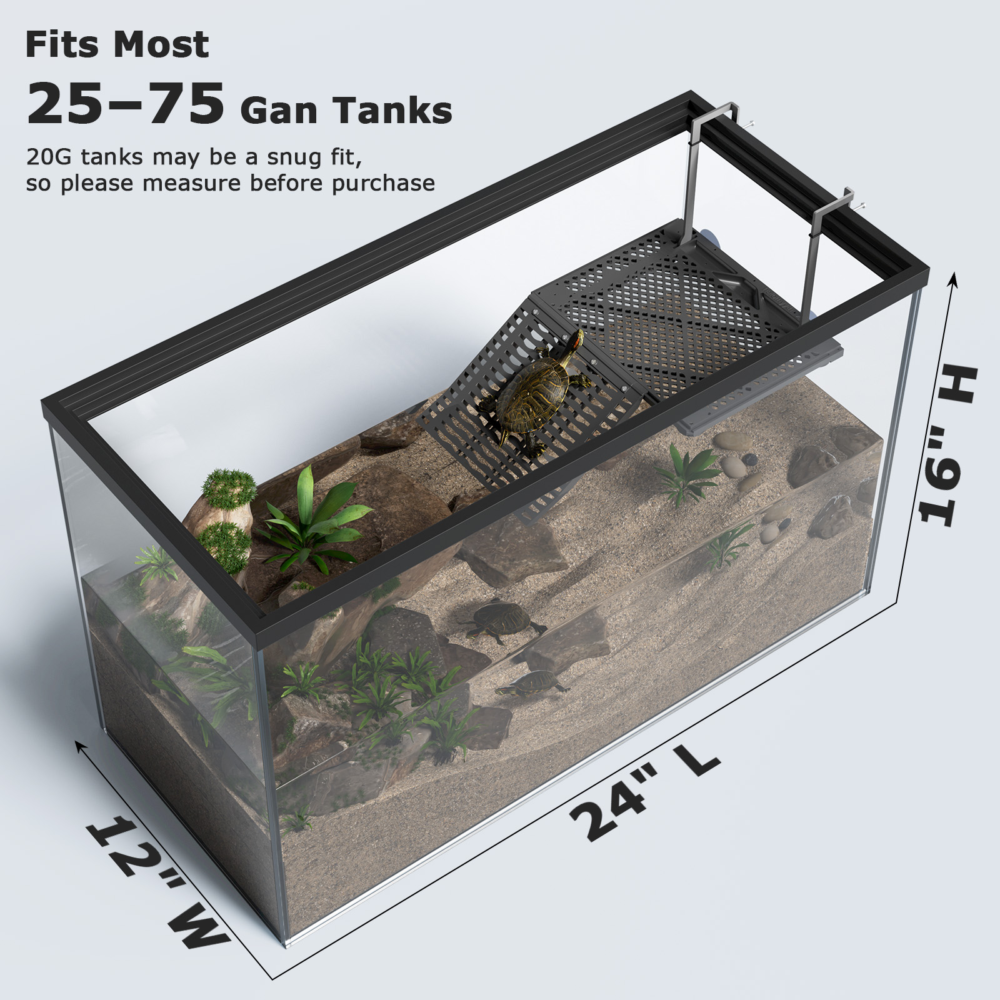

Main Image Candidate
Use as the first product image if accepted by the marketplace category.
Open original imagehttps://leeyy774634198-commits.github.io/halomyyth/images/original/turtle-basking-platform-main.jpg
Public product image access
These original image files are hosted as public static assets. Each image can be opened directly by anyone with the URL, without registration, login, password, CAPTCHA, payment, or verification redirects.
https://leeyy774634198-commits.github.io/halomyyth/
Use these URLs in this order for review. The links open public JPG files directly and do not require registration, login, password, CAPTCHA, payment, or redirect verification.
https://leeyy774634198-commits.github.io/halomyyth/images/original/turtle-basking-platform-main.jpghttps://leeyy774634198-commits.github.io/halomyyth/images/original/turtle-basking-platform-material.jpghttps://leeyy774634198-commits.github.io/halomyyth/images/original/turtle-basking-platform-stability.jpghttps://leeyy774634198-commits.github.io/halomyyth/images/original/turtle-basking-platform-tank-fit.jpghttps://leeyy774634198-commits.github.io/halomyyth/images/original/turtle-basking-platform-feeding-tray.jpghttps://leeyy774634198-commits.github.io/halomyyth/images/original/turtle-basking-platform-anti-slip-ramp.jpghttps://leeyy774634198-commits.github.io/halomyyth/images/original/turtle-basking-platform-size-guide-25gal.jpghttps://leeyy774634198-commits.github.io/halomyyth/images/original/turtle-basking-platform-tank-compatibility.jpg
Use as the first product image if accepted by the marketplace category.
Open original imagehttps://leeyy774634198-commits.github.io/halomyyth/images/original/turtle-basking-platform-main.jpg
Shows aquatic-ready material and hanging platform use.
Open original imagehttps://leeyy774634198-commits.github.io/halomyyth/images/original/turtle-basking-platform-material.jpg

Shows reinforced hardware and larger turtle support.
Open original imagehttps://leeyy774634198-commits.github.io/halomyyth/images/original/turtle-basking-platform-stability.jpg
Shows dual-hook design for rimmed and rimless tanks.
Open original imagehttps://leeyy774634198-commits.github.io/halomyyth/images/original/turtle-basking-platform-tank-fit.jpg

Shows the built-in feeding tray feature.
Open original imagehttps://leeyy774634198-commits.github.io/halomyyth/images/original/turtle-basking-platform-feeding-tray.jpg

Shows the textured ramp and claw-friendly support.
Open original imagehttps://leeyy774634198-commits.github.io/halomyyth/images/original/turtle-basking-platform-anti-slip-ramp.jpg

Shows platform dimensions and turtle size guidance.
Open original imagehttps://leeyy774634198-commits.github.io/halomyyth/images/original/turtle-basking-platform-size-guide-25gal.jpg
Archive image kept for record only. Do not submit this one with the 25 Gal+ version.
Open original imagehttps://leeyy774634198-commits.github.io/halomyyth/images/original/turtle-basking-platform-size-guide-20gal.jpg

Shows fit range for most 25 to 75 gallon tanks.
Open original imagehttps://leeyy774634198-commits.github.io/halomyyth/images/original/turtle-basking-platform-tank-compatibility.jpg
The text-free image is the best current main image candidate. A pure white-background product-only image would be stronger.
Each image link opens the original JPG file directly.
Keep these filenames unchanged after submitting URLs for review.